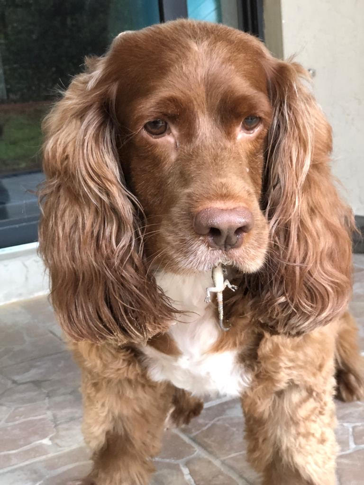
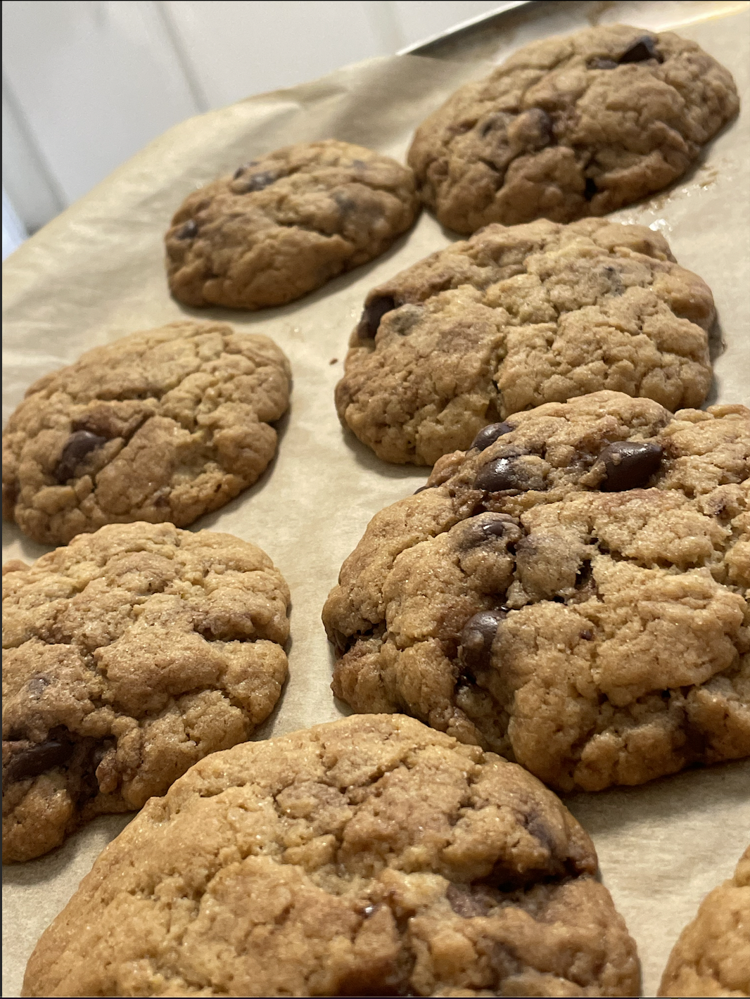

Food!
Favorite Food And Resturants!
Food! I can rant about food for hours! Food is essential to our survival. It's a part of culture with different foods across the world! You can be eating chicken one way in the US and eat it another way in Spain. Food is a language in itself and everyone speaks it because everyone loves food!
My favorite food depends on my culture. My mom isn't a chef but damn can she cook! She makes a dish called, "Pollo en Salsa". This tranlates to Chicken in Sause. My mom creates her own sause (It's a secret recipe!). She covers the chicken in said sause and cook it. You eat the chicken and place the sause on rice and it tastes absolutely amazing!
Cooking!
Cooking is a passion of mine. Cooking is also something that connects my family together. When Thanksgiving rolls around each year, my family gathers and makes this dish called an 'hallaca'. I personally don't like hallacas, but I love bonding with my family while we make them.
With my cousins, we tend to get on the sweet side. We bake an pastery from cookies to brownies to cake. You name a pastery, we can make it for you. Me and my cousin have kept our best recipes in a cookbook that has been past on from generation to generation. It has many blank pages for new recipes and me and my cousins have made our fair share of additions to the book! Above is an actual picture of the cookies we made!